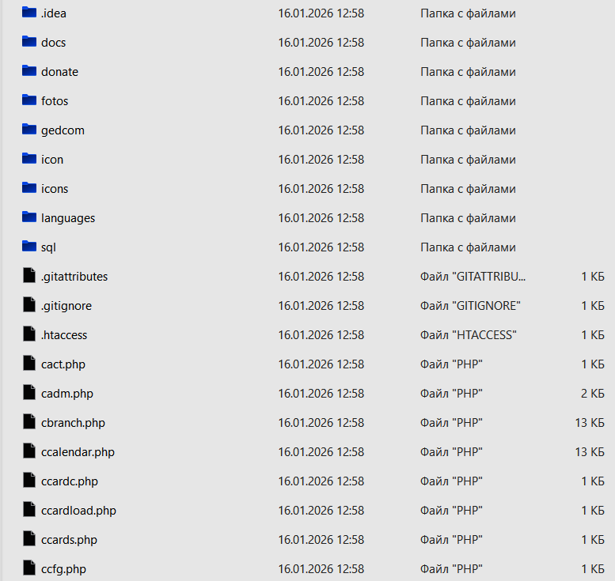

<!--
"Genealogy Family Online" is your key to creating an interactive, living archive 
that will unite generations and preserve the memory of the past for the future.
In the digital age, when borders are erased with one click, the ability to unite the 
history of your family, wherever its members are, is becoming not just a desire, 
but a pressing need.
-->
<!DOCTYPE html PUBLIC "-//W3C//DTD XHTML 1.0 Strict//EN" 
"http://www.w3.org/TR/xhtml1/DTD/xhtml1-strict.dtd">
<html xmlns="http://www.w3.org/1999/xhtml">
<head>
<meta http-equiv="Content-Type" content="text/html; charset=utf-8" />
<title>genealogia da família Online < /title>
<!-- menu-script-beg -->
<link rel="STYLESHEET" type="text/css" href="style.css">
<SCRIPT SRC="menu.js"></SCRIPT>
<!-- menu-script-end -->
</head>
<body>
<div id="head">
<h1>genealogia da família Online < /h1>
</div>
<!-- Menu-Beg -->
<script>MenuLeft()</script>
<!-- Menu-End -->

<div id="content">
<h4>&nbsp;<a name="INSTALL1"></a> </h4>
<center><h2>instalação < /h2 > < / center>
<h3>arquivo < /h3>
<ul>
  <li>baixe o arquivo de <a href="https://github.com/dvpt1/genealogy-family-online" 
target="_blank">GITHUB</a></li>
  <li>descompacte-o no seu computador</li>
</ul>

...<br />
<h4>&nbsp;<a name="INSTALL2"></a> </h4>
<h3>instalação < /h3>
<ul>
  <li>Faça o upload do arquivo descompactado para o seu site via FTP, SFTP ou outros meios para a raiz do site ou uma pasta separada no site</li>
</ul>
<h4>&nbsp;<a name="INSTALL3"></a> </h4>
<H3>configuração < /h3 > 
<ul>
  <li>definir pasta-cards - permissões 755</li>
  <li>definir pasta-fotos - permissões 755</li>
  <li>configure o arquivo ccfg.php</li>
<pre>
$https = 'https://site.online';
$CONFIG                  = array();
$CONFIG['HOST_NAME']     = 'localhost';
$CONFIG['DATABASE_NAME'] = '';
$CONFIG['DB_USERNAME']   = '';
$CONFIG['DB_PASSWORD']   = '';
</pre>
  <li>crie tabelas `csessions` e `cusers`no MySQL</li>
<pre>
CREATE TABLE `cusers` (
  `id` int NOT NULL,
  `name` varchar(100) NOT NULL DEFAULT '',
  `pass` varchar(128) NOT NULL DEFAULT '',
  `fio` varchar(160) NOT NULL DEFAULT '',
  `country` varchar(40) NOT NULL DEFAULT '',
  `postcode` varchar(20) NOT NULL DEFAULT '',
  `city` varchar(40) NOT NULL DEFAULT '',
  `address` varchar(160) NOT NULL DEFAULT '',
  `phone` varchar(30) NOT NULL DEFAULT '',
  `http` varchar(160) NOT NULL DEFAULT '',
  `activation` varchar(255) NOT NULL,
  `status` enum('0','1') NOT NULL DEFAULT '0',
  `acces` enum('0','1','2') NOT NULL DEFAULT '0',
  `two_factor_code` varchar(6) NOT NULL DEFAULT '',
  `two_factor_expires_at` varchar(11) NOT NULL DEFAULT '',
  `notes` text NOT NULL
) ENGINE=MyISAM DEFAULT CHARSET=utf8mb4 COLLATE=utf8mb4_general_ci;

CREATE TABLE `csessions` (
  `session` varchar(32) NOT NULL default '',
  `id` int(11) NOT NULL default '0',
  `name` varchar(80) NOT NULL default '',
  PRIMARY KEY  (`session`)
) ENGINE=MyISAM;
</pre>
  <li>crie seu primeiro Usuário-será superuser</li>
</ul>

<p>Faça o download do site do GitHub https://github.com/dvpt1/genealogy-family-online modelo de plataforma.
Faça o upload do arquivo descompactado para o seu site via FTP, SFTP ou outro método na raiz do site ou em uma pasta separada em seu site.</p>
 
<p>configure a configuração dos arquivos no site-ccfg.php .
Crie um banco de dados em MySQL e tabelas "csessions" e "cusers"
Crie seu primeiro usuário-ele será superusuário.
Um link será enviado para o seu endereço de e-mail para ativar o novo usuário.
Clique no link no e-mail.
Após a ativação, o usuário recebe o Nível 2 de acesso.
Para alterar o nível de acesso, o administrador do site deve estar no painel cadm.php por exemplo, atribua ao usuário o nível de acesso 1 ou 2.</p>

<p>para entrar no site, digite seu nome de usuário e senha. Clique em entrar.
Um código de 6 dígitos será enviado para o seu endereço de e-mail. Digite-o na caixa Código. Clique em "entrar" novamente.
Atenção, se não houver E-mails, verifique a pasta "spam".</p>

<br />

</div>
<h4>&nbsp;</h4>
<div id="foot"> Copyright &copy; Konyuhov D.L. </div>
</body>
</html>